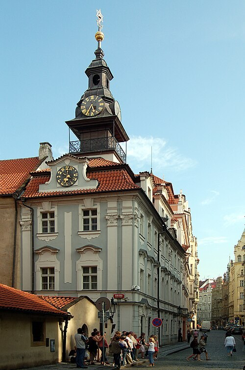

Zsidó negyed (Josefov)
Josefov utcáin járva fontos tudnunk, hogy a mai negyed nem a régi gettó változatlanul fennmaradt képe. A tizenkilencedik század végi és a huszadik század eleji városrendezés sok korábbi házat és utcát eltüntetett. A szélesebb utak és reprezentatív bérházak között néhány kiemelkedő régi emlék maradt meg. A hely történetét ezért a fennmaradt épületekből és a tudatosan felidézett hiányokból együtt érthetjük meg.
A prágai zsidó közösség évszázadokon át sajátos jogi és társadalmi keretek között élt. A kereskedelem, a vallási tanulás és a közösségi intézmények sűrű világot hoztak létre. A negyed neve II. József korának változásaira is emlékeztet. A történet azonban nem egyetlen uralkodói intézkedésből, hanem hosszú alkalmazkodásokból és megpróbáltatásokból áll.
A Zsidó Múzeum nem egyetlen épületet jelent. Történelmi zsinagógák, kiállítások és a Régi Zsidó Temető alkotják a látogatható együttest. A különböző helyszíneken vallási tárgyakkal, közösségi történettel és személyes emlékekkel találkozhatunk. Érdemes több időt hagyni rá, mint egy egyszerű utcai körsétára.
A temető sűrűn álló sírkövei különösen erős látványt adnak. A korlátozott terület miatt az idők során több rétegben temetkeztek, miközben a régebbi köveket is megőrizték. A szabálytalannak tűnő elrendezés mögött így hosszú használat és gondos továbbőrzés története áll. Egy-egy név, jel és faragvány önálló életpályához vezethetne közelebb.
A Pinkas zsinagóga a holokauszt áldozatainak emlékhelye is. A falakra írt nevek és a gyermekrajzok a történelmet személyes sorsokká teszik. A negyed kulturális gazdagsága és a közösség huszadik századi pusztulása itt nem választható el egymástól. A séta ezen a ponton különösen csendes figyelmet kíván.
A Régi Új zsinagógát a következő állomáson külön nézzük meg. Josefov egészében pedig figyeljük a régi emlékek és az újabb városi környezet kapcsolatát. A hely egyszerre vallási örökség, élő közösségi tér és múzeumi bemutatás. Ha ezt a három nézőpontot együtt tartjuk, a negyed sokkal többet mond el, mint a Gólem története vagy a sírkövek legismertebb fényképe.
50.089720, 14.418610